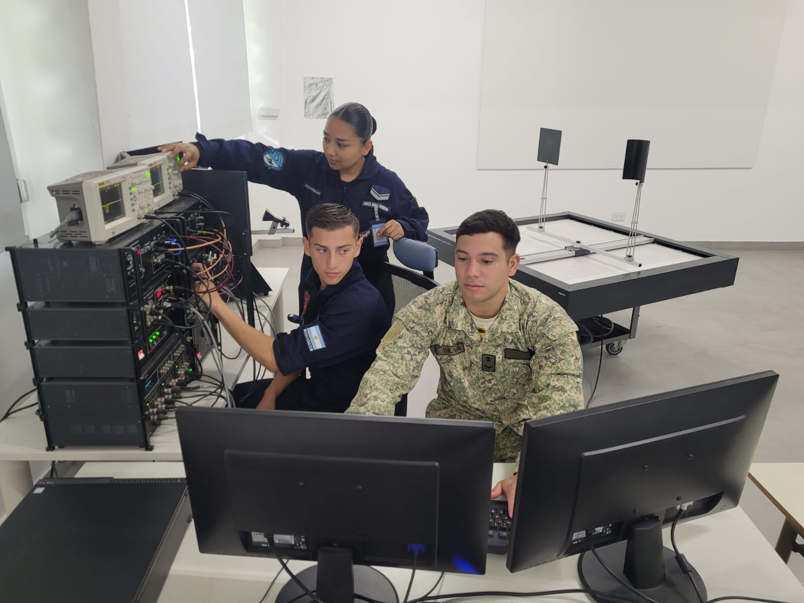
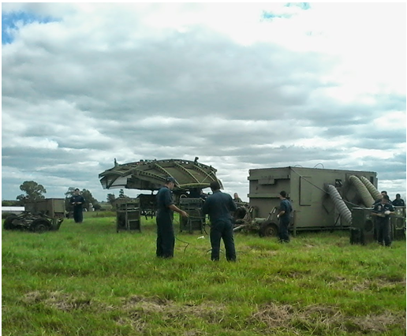
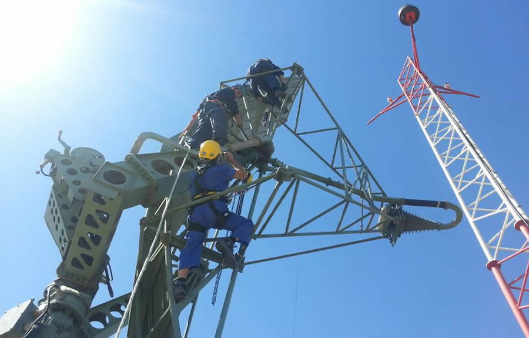

Mecanicos
Electronico de Taller
El personal estará capacitado para dar respuesta a las diversas necesidades de mantenimiento en sistemas radar, telecomunicaciones y sistemas electrónicos en general que se presentan en la Institución dentro del ámbito de su competencia, como así también para garantizar la eficiente y eficaz gestión de recursos y servicios propios de los organismos de Mantenimiento.
Tecnicos
El personal tecnico en elcetronica egresado de las aulas antiende todos los equipos de radar de la Fuerza Aerea y en sus talleres se han reparado o se ha presentado colaboracion para reparar equipos de radar, meteorologicos, de nevegacion, de aterrizaje y aproximacion a Aerdodromos de tiro para la artilleria antiaerea de seguimiento de proyectiles espaciales y ademas equipo electronicos e intrumental
